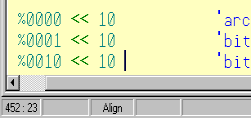
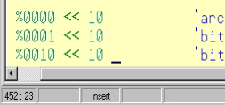
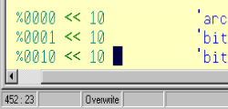
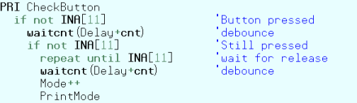
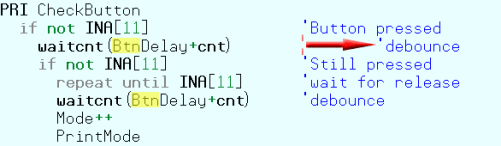
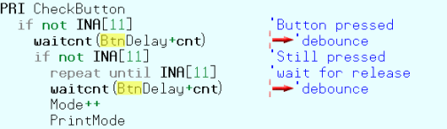
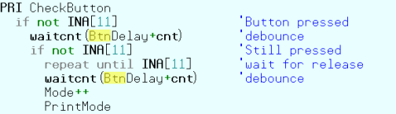

There are three edit modes provided by the Editor pane: 1) Insert (default), 2) Align (available for “.spin” objects only), and 3) Overwrite. You cycle through the modes by using the Insert key. The current mode is reflected by both the caret shape and by panel three of the status bar.

Insert Edit Mode
Caret is the standard blinking, vertical bar and the status bar shows “Insert.”

Align Edit Mode
Caret is a blinking underline and the status bar shows “Align.”

Overwrite Edit Mode
Caret is a blinking, solid block and the status bar shows “Overwrite.”
The Insert and Overwrite modes are similar to that of many other text editors. These are the only two modes available to edit tabs containing files other than Propeller “.spin” objects, such as “.txt” files.
The Align mode is a special version of the Insert mode designed specifically for maintaining source code. To understand Align mode, we first need to consider common programming techniques. There are two very common practices used when writing modern source code: 1) indention of code and 2) alignment of comments to the right of code. It is also common for source code to be viewed and edited using more than one editor application. Historically, programmers have used either tabs or spaces for indention and alignment purposes, both of which prove problematic. Tab characters cause alignment issues because some editors use different sized tab settings than others. Both tab and space characters cause alignment issues because future edits cause right-side comments to shift out of alignment. Here are some examples:

Original Code
If the original code used tab characters to align the comments, changing Delay to BtnDelay will cause a comment to shift right if the altered text crosses a tab boundary.

Tab Aligned
If the original code had been made with tab characters to align the comments, changing Delay to BtnDelay results in the second comment suddenly being pushed out by another tab width.

Space Aligned
If the original code had been made with space characters to align the comments, and a standard Insert edit mode is used, changing “Delay” to “BtnDelay” results in the second and fifth comments being pushed out by 3 spaces.
For Spin code, the Propeller Tool solves this problem first by disallowing tab characters (Tab key presses emit the proper number of space characters), and second by providing the Align edit mode. While in the Align mode, characters inserted into a line affect neighboring characters but not characters separated by more than one space. The result is that comments and other items separated by more than one space maintain their intended alignment for as long as possible.

Effects of the Align Edit Mode
Using the Align edit mode, changing Delay to BtnDelay leaves all the comments in their original, aligned, location. No manual re-aligning of comments is necessary in this case.
Since the Align mode maintains existing alignments as much as possible, much less time is wasted realigning elements due to future edits by the programmer. Additionally, since spaces are used instead of tab characters, the code maintains the same look and feel in any editor that displays it with a mono-spaced font.
The Align mode isn’t perfect for all situations, however. We recommend you use Insert mode for most code writing and briefly switch to Align mode to maintain existing code where alignment is a concern. The Insert key rotates the mode through Insert → Align → Overwrite and back to Insert again. The Ctrl+Insert key shortcut toggles only between Insert and Align modes. A little practice with the Align and Insert modes will help you program more time-efficiently.
Note that non-Spin source (without a .spin extension) does not allow the Align mode. This is because, for non-Spin source, the Propeller Tool is designed to maintain any existing tab characters and to insert tab characters when the Tab key is pressed in order to maintain the original intent of the file, which may be a tab-delimited data source for a Spin program or other use where tab characters are desired.
Propeller Help Version 1.2
Copyright © Parallax Inc., dba Parallax Semiconductor
6/17/2011